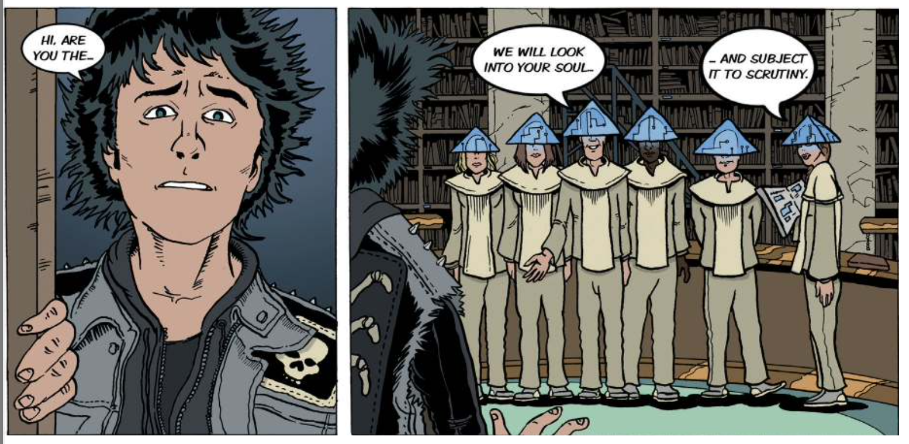
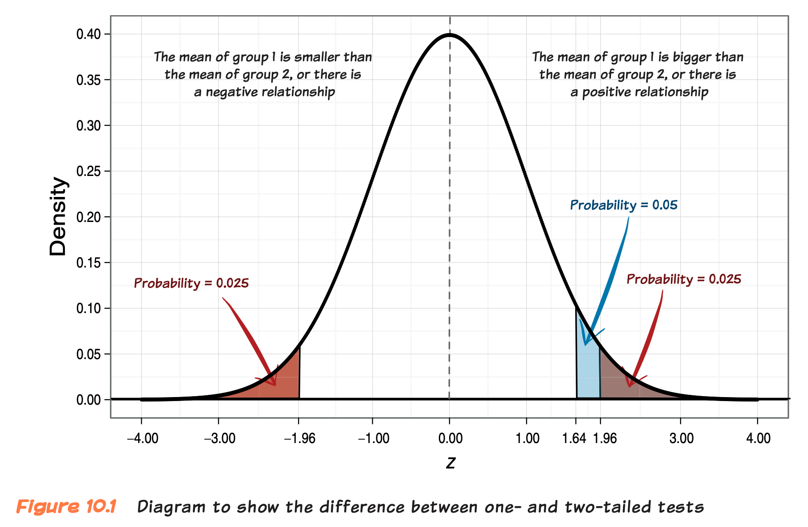
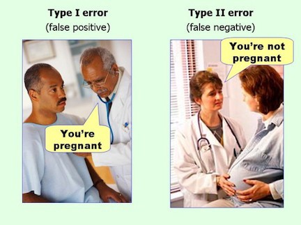
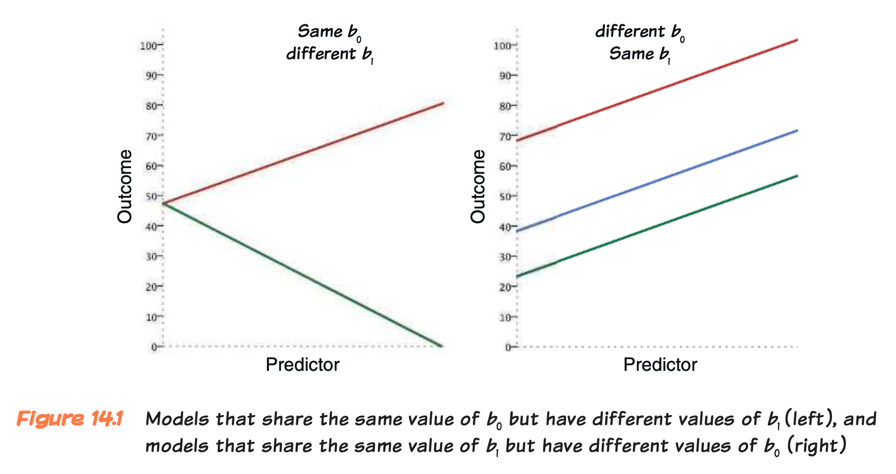
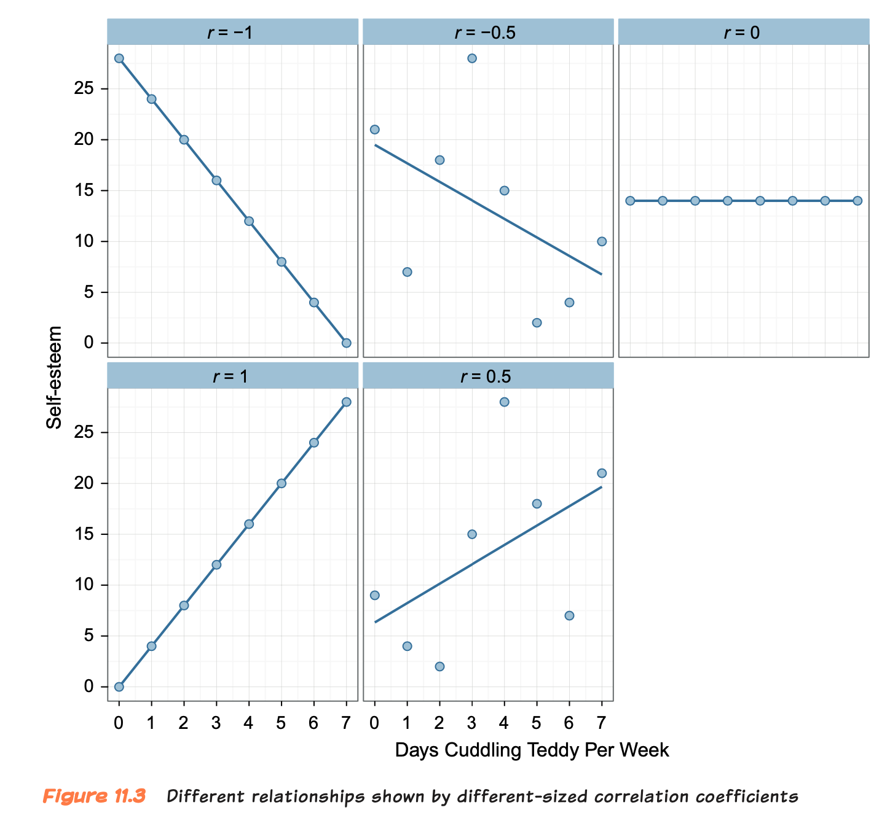

ID Latency Garlic
1 1 13 0
2 2 15 2
3 3 30 14
4 4 16 0
5 5 19 13
6 6 23 9
7 7 15 1
8 8 16 4
9 9 26 3
10 10 23 7Hypothesis Testing
09 - Stats using R
Ajay Kumar Koli
NULL HYPOTHESIS SIGNIFICANCE TESTING (NHST)
NHST
There are different ways to find the truth. We favour the use of probability.
Compare competing versions of the truth and tell us the probability of one truth over another.
NHST
NHST is a chimera1 of two ideas:
Evaluating evidence using competing hypotheses
Using probabilities to evaluate evidence
Types of Hypothesis
Neyman and Pearson believed that scientific statements should be split into testable hypotheses.
Alternative hypothesis or experimental hypothesis
Null hypothesis.
Alternative Hypothesis (H1)
- The prediction that there will be an effect.
- i.e. that your experimental manipulation will have some effect or that certain variables will relate to each other.
Null Hypothesis (H0)
- The reverse of the experimental hypothesis that your prediction is wrong and the predicted effect doesn’t exist (i.e., it is zero).
- Essentially, this hypothesis is never true, but that does not stop lots of people from pretending that it might be.
YOUR TURN
What are the null and alternative hypotheses for the following statements:
JIG:SAW employees are stronger than non-employees.
T-shirt sales are affected by giving away a free wristband.
Fisher’s p-value
Fisher’s p-value
Two boxes randomly arranged
- 📦 📦
Six boxes randomly arranged
- 📦 📦 📦 📦 📦 📦
Fisher’s p-value
\(p\)-value, a value of probability at which you are prepared to believe a hypothesis.
It is a subjective decision based on the research context.
Fisher’s p-value
A probability of 0.01 (1% chance of guessing the effect) would be strong evidence to support a hypothesis.
A probability of 0.20 (20% chance of guessing the effect) would be weak evidence to support a hypothesis.
Scientists blindly use a threshold of 0.05 (5% chance of guessing the effect)
NHST is a Blend of
Fisher’s idea of using the probability value \(p\) as information about the plausibility of a null hypothesis, and
Neyman and Pearson’s idea of test a null hypothesis against an alternative hypothesis.
The Principles of NHST
Make predictions based on your hypothesis (this must happen before any data are collected).
Collect some data
Fit a statistical model to the collected data that represents the alternative hypothesis.
Calculate the probability (the \(p\)-value) of getting that model if the null hypothesis were true.
If that probability is very small (the usual criterion is 0.05 or less) then conclude that the model fits the data better than the null hypothesis and gain confidence in the alternative hypothesis. Remember, we can never be completely sure that either hypothesis is correct; we can merely calculate the probability that our model would fit as well as it does if there were no effect in the population (i.e., the null hypothesis is true). As this probability decreases, we gain greater confidence that the alternative hypothesis is correct and that the null hypothesis is not; it does not mean that the alternative hypothesis is the best model of the data, there could be other hypotheses that fit the data even better.
Test Statistics
\[ outcome_i=(b_0+b_1X_i)+error_i \]
The parameters (\(b\)s) in this equation represent hypotheses.
Error is quantified by the standard error (how parameter estimates differ across different samples).
Test Statistics
\[ outcome_i=(b_0+b_1X_i)+error_i \]
The parameter estimate, \(b\), represents the signal.
- The size of the effect for the hypothesis you are testing.
The standard error tells us the noise - the likely error in that estimate.
Signal to noise ratio is called a test statistic.
Test Statistics
\[ test statistic=\frac{signal}{noise}=\frac{effect}{error}=\frac{parameter\;estimate(b)}{standard\;error\;of\;b} \]
The test statistic differs for different types of model.
The all have an associated probability distribution.
You can compute the probability that you would get a test statistic at least as big as the one you have.
Test Statistics
Different test statistics have different probability distributions
\(t\)-distribution
chi-square \(\chi^2\) distribution and
\(F\)-distribution
Test Statistics
The probability is the \(p\)-value that Fisher described.
\(p\)-value below 0.05 that effect is significant.
\(p\)-value above 0.05 that effect is non-significant.
One- and Two-Tailed Tests
The alternative hypothesis can be directional or non-directional.
A statistical model that tests directional hypothesis is called a one-tailed test.
A directional hypothesis states the direction of the effect.
It specifies whether scores will be higher or lower in certain conditions, or that a relationship between variables is in a specific direction.
One- and Two-Tailed Tests
The alternative hypothesis can be directional or non-directional.
A statistical model that tests non-directional hypothesis is known as a two-tailed test.
- Non-directional because you state only that there will be a difference, and not which group will score higher than the other.
Music and Gym
We want to discover whether listening to music while exercising affects your running speed.
If non-directional hypothesis:
People who listen to music while exercising run faster than those who do not, so the difference is positive. Positive relationship between listening music and speed.
People who listen to music while exercising run slower than those who do not, so the difference is negative. There is a negative relationship between listening to music and speed.
There is no difference in speed between who listen to music and those who do not. There is no relationship between listening to music and speed. This final option is the null hypothesis.
One- and Two-Tailed Tests
One-Tailed Test
I’m putting all of my eggs into one basket and I look only at one end of the distribution (either the positive or the negative end, depending on the direction of my prediction).
If you make a specific prediction then you need a smaller test statistic to find a significant result
One-Tailed Test
If you do a one-tailed test and the results turn out to be in the opposite direction to what you predicted, you must ignore them and accept the null hypothesis.
It encourages people to cheat.
Type I and Type II errors
We look at test statistics and their associated probabilities to tell us whether there is effect or there is no effect in the population.
Type I error
When you believe that there is a genuine effect in the population, when in fact there is not.
As per conventional criterion the probability of this error is 0.05 (5%) when there is no effect in the population.
This value is known as \(\alpha\)-level.
If the \(\alpha\)-level is set at 0.05 then 5/100 times you will falsely think that population has an effect.
Type II error
When you believe that there is no effect in the population when, in reality, there is.
We want the probability of this error to be very small.
Cohen suggested, max acceptable probability of a Type II error is 0.2 (20%) - \(\beta\)-level
THE GENERAL LINEAR MODEL
The Linear Model with One Predictor
\[ outcome_i=(b_0+b_1X_i)+error_i\\ Y_i=(b_0+b_1X_i)+e_i \]
\(b_1\) and \(b_0\) are known as the regression coefficients
when more than one predictor \(b_1\) as regression coefficient or gradient and \(b_0\) as constant or intercept
The Linear Model with One Predictor
Zombie Data
Regression Model
Call:
lm(formula = garlic$Latency ~ garlic$Garlic)
Residuals:
Min 1Q Median 3Q Max
-6.3789 -2.4975 -0.4975 1.7489 8.1262
Coefficients:
Estimate Std. Error t value Pr(>|t|)
(Intercept) 15.6223 1.9873 7.861 4.95e-05 ***
garlic$Garlic 0.7505 0.2743 2.736 0.0256 *
---
Signif. codes: 0 '***' 0.001 '**' 0.01 '*' 0.05 '.' 0.1 ' ' 1
Residual standard error: 4.285 on 8 degrees of freedom
Multiple R-squared: 0.4835, Adjusted R-squared: 0.4189
F-statistic: 7.487 on 1 and 8 DF, p-value: 0.02559CORRELATION
Pearson’s Correlation Coefficient, \(r\)
It is a measure of the strength of a relationship between two continuous variables or
between one continuous variable and a categorical variable containing two categories.
It is a measure that can vary between -1 and 1.
Correlation Coefficients
Correlation Coefficients
\(r\) = 0 = no effect
\(r\) = 0.10 = small effect (1% of the total variance)
\(r\) = 0.30 = medium effect (9% of the total variance)
\(r\) = 0.50 = large effect (25% of the variance)
Correlation(\(r\)) using R
Correlation Plot